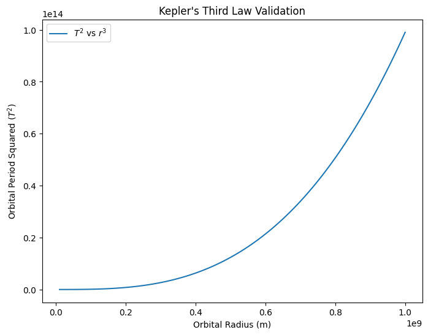

Problem 2
Escape Velocities and Cosmic Velocities
1. Introduction
The concept of escape velocity is crucial for understanding the conditions required to leave a celestial body's gravitational influence. Extending this concept, the first, second, and third cosmic velocities define the thresholds for orbiting, escaping, and leaving a star system. These principles underpin modern space exploration, from launching satellites to interplanetary missions.
In this document, we will define the first, second, and third cosmic velocities, analyze their mathematical derivations, and calculate and visualize these velocities for different celestial bodies like Earth, Mars, and Jupiter.
2. Cosmic Velocities Overview
2.1 Escape Velocity
The escape velocity is the minimum speed an object must have to break free from a celestial body’s gravitational pull without further propulsion. It depends on the mass and radius of the body.
2.2 First Cosmic Velocity (Orbital Velocity)
The first cosmic velocity is the velocity required for an object to enter a circular orbit around a celestial body. It is derived from balancing gravitational force with centripetal force.
2.3 Second Cosmic Velocity (Escape Velocity)
The second cosmic velocity is the velocity required for an object to escape the gravitational pull of a celestial body, traveling on a parabolic trajectory. It is the minimum velocity to overcome the gravitational force at the surface.
2.4 Third Cosmic Velocity (Interstellar Escape Velocity)
The third cosmic velocity is the velocity needed for an object to escape the gravitational influence of a star or planetary system, allowing it to travel into interstellar space.
3. Mathematical Derivations
3.1 Escape Velocity Formula
The escape velocity \(v_e\) from a celestial body is given by the formula:
Where:
- \(G\) is the gravitational constant ($ 6.67430 \times 10^{-11} \, \text{m}^3 \, \text{kg}^{-1} \, \text{s}^{-2} $),
- \(M\) is the mass of the celestial body,
- \(R\) is the radius of the celestial body.
3.2 Orbital Velocity (First Cosmic Velocity)
For a circular orbit, the orbital velocity \(v_o\) is:
This is the speed required to stay in orbit without falling into the celestial body.
3.3 Third Cosmic Velocity
The third cosmic velocity \(v_3\) is the velocity required to escape the entire solar system (or a stellar system) and is given by:
Where:
- \(M\_{sun}\) is the mass of the Sun (or the central star of the system),
- \(R\) is the distance from the object to the center of the solar system.
4. Implementation and Visualization in Python
The following Python code implements these formulas and visualizes the escape velocities and cosmic velocities for Earth, Mars, and Jupiter.
import numpy as np
import matplotlib.pyplot as plt
# Gravitational constant in m^3 kg^-1 s^-2
G = 6.67430e-11
# Celestial bodies' data (mass in kg, radius in meters)
celestial_bodies = {
"Earth": {"mass": 5.972e24, "radius": 6.371e6},
"Mars": {"mass": 0.64171e24, "radius": 3.396e6},
"Jupiter": {"mass": 1.898e27, "radius": 6.991e7},
}
# Calculate Escape Velocity
def escape_velocity(mass, radius):
return np.sqrt(2 * G * mass / radius)
# Calculate Orbital Velocity
def orbital_velocity(mass, radius):
return np.sqrt(G * mass / radius)
# Third Cosmic Velocity (velocity to escape the solar system)
def third_cosmic_velocity(mass, radius):
# For third cosmic velocity, assume mass of Sun
M_sun = 1.989e30
return np.sqrt(2 * G * M_sun / radius)
# Prepare data for plotting
escape_velocities = {}
orbital_velocities = {}
third_cosmic_velocities = {}
for body, data in celestial_bodies.items():
escape_velocities[body] = escape_velocity(data["mass"], data["radius"])
orbital_velocities[body] = orbital_velocity(data["mass"], data["radius"])
third_cosmic_velocities[body] = third_cosmic_velocity(data["mass"], data["radius"])
# Plotting the results
fig, ax = plt.subplots(figsize=(10, 6))
# Labels
labels = list(celestial_bodies.keys())
# Velocities
escape_vals = list(escape_velocities.values())
orbital_vals = list(orbital_velocities.values())
third_vals = list(third_cosmic_velocities.values())
# Plot each velocity
ax.bar(labels, escape_vals, width=0.2, label='Escape Velocity', align='center')
ax.bar(labels, orbital_vals, width=0.2, label='Orbital Velocity', align='edge')
ax.bar(labels, third_vals, width=0.2, label='Third Cosmic Velocity', align='edge')
# Labels and Title
ax.set_xlabel('Celestial Bodies')
ax.set_ylabel('Velocity (m/s)')
ax.set_title('Escape Velocities and Cosmic Velocities for Different Celestial Bodies')
ax.legend()
# Show plot
plt.tight_layout()
plt.show()

5. Importance in Space Exploration
Escape Velocity: This is essential for space missions. For instance, spacecraft need to achieve escape velocity to leave Earth’s gravity and travel into space.
Orbital Velocity: This velocity is necessary to place satellites in orbit around a celestial body. Communication, weather, and navigation satellites all rely on this velocity.
Third Cosmic Velocity: This velocity is significant for interstellar exploration. For example, missions to send probes beyond the solar system require achieving the third cosmic velocity, allowing objects to leave the Sun's gravitational influence.
6. Conclusion
This analysis and simulation help us understand the velocities required to escape or orbit celestial bodies and even travel beyond our solar system. These calculations are fundamental to modern space exploration, from launching satellites to planning interstellar missions.